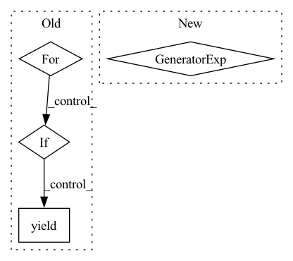

Pattern ID :131
Before Change
yield self.fp_tasks[i]
def tasks_for_fn(self, items: List[Any]) -> Iterable[str]:
for i, fn_item in enumerate(self.fn_items):
if fn_item in items:
yield self.fn_tasks[i]
@property
def fp(self):After Change
)
def tasks_for_fn(self, items: List[Any]) -> Iterable[str]:
return (
task
for item, tasks in self.fn_items_to_tasks.items()
for task in tasks
if item in items
)
@property
def precision(self):
div = self.fp + self.tpIn pattern: SUPERPATTERN
Frequency: 3
Non-data size: 4
Instances Fragment ID: 1329073
Project Name: astrazeneca/kazu
Commit Name: 2f11a76f871f1fcd91983cc15171db358718d00a
Time: 2022-11-30
Author: elliot.ford@astrazeneca.com
File Name: kazu/tests/test_acceptance_test.py
M Class Name: AggregatedAccuracyResult
N Class Name: AggregatedAccuracyResult
M Method Name: tasks_for_fn(2)
N Method Name: tasks_for_fn(2)
M Parent Class:
N Parent Class:
M File Name: kazu/tests/test_acceptance_test.py
N File Name: kazu/tests/test_acceptance_test.py
M Start Line: 160
M End Line: 164
N Start Line: 175
N End Line: 180
Before Change
fn_tasks: List[str] = dataclasses.field(default_factory=list)
def tasks_for_fp(self, items: List[Any]) -> Iterable[str]:
for i, fp_item in enumerate(self.fp_items):
if fp_item in items:
yield self.fp_tasks[i]
def tasks_for_fn(self, items: List[Any]) -> Iterable[str]:
for i, fn_item in enumerate(self.fn_items):After Change
self.fn_items_to_tasks.setdefault(item, set()).add(task)
def tasks_for_fp(self, items: List[Any]) -> Iterable[str]:
return (
task
for item, tasks in self.fp_items_to_tasks.items()
for task in tasks
if item in items
)
def tasks_for_fn(self, items: List[Any]) -> Iterable[str]:
return (
task Fragment ID: 1329074
Project Name: astrazeneca/kazu
Commit Name: 2f11a76f871f1fcd91983cc15171db358718d00a
Time: 2022-11-30
Author: elliot.ford@astrazeneca.com
File Name: kazu/tests/test_acceptance_test.py
M Class Name: AggregatedAccuracyResult
N Class Name: AggregatedAccuracyResult
M Method Name: tasks_for_fp(2)
N Method Name: tasks_for_fp(2)
M Parent Class:
N Parent Class:
M File Name: kazu/tests/test_acceptance_test.py
N File Name: kazu/tests/test_acceptance_test.py
M Start Line: 155
M End Line: 159
N Start Line: 167
N End Line: 172
Before Change
:param parser_name:
:return:
for action_index in range(len(self.parser_actions)):
maybe_parser_behaviour_and_id = self._general_behaviours.get(
action_index, self._parser_name_to_behaviour.get(parser_name, {}).get(action_index)
)
if maybe_parser_behaviour_and_id is not None:
yield maybe_parser_behaviour_and_id
@classmethod
def from_json(cls, json_dict: Dict) -> "Curation":After Change
parser_specific_behaviours + self._general_behaviours, key=itemgetter(2)
)
yield from ((behaviour, id_) for (behaviour, id_, action_index) in behaviour_iterable)
@classmethod
def from_json(cls, json_dict: Dict) -> "Curation":
return cls( Fragment ID: 1329075
Project Name: astrazeneca/kazu
Commit Name: 37b35348f47cb5e3b39ec8f5274de980d59dc684
Time: 2023-03-29
Author: richard.jackson4@astrazeneca.com
File Name: kazu/data/data.py
M Class Name: Curation
N Class Name: Curation
M Method Name: parser_behaviour(2)
N Method Name: parser_behaviour(2)
M Parent Class:
N Parent Class:
M File Name: kazu/data/data.py
N File Name: kazu/data/data.py
M Start Line: 820
M End Line: 827
N Start Line: 828
N End Line: 836